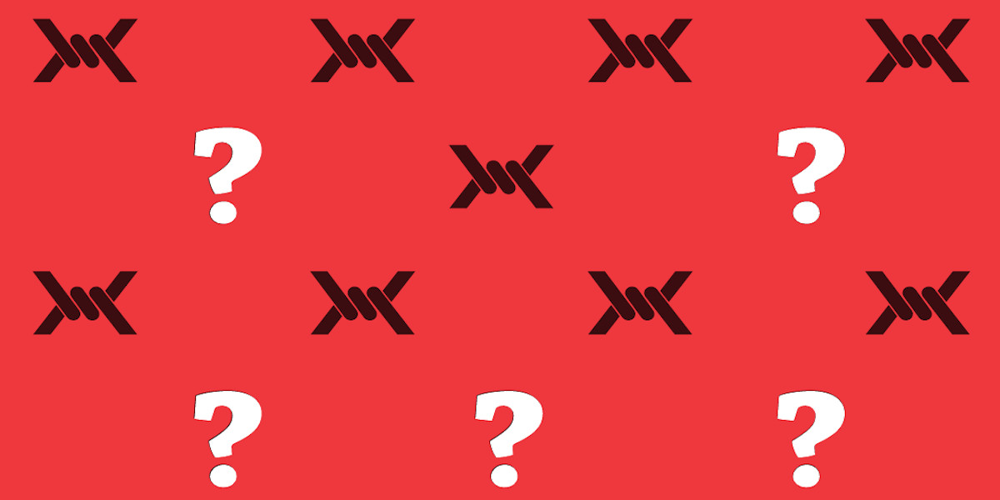

De condicionamiento a sextorsión, las preguntas que NO estamos haciendo
Cyntia Moncada Siller - 20 November 2019

Por Cyntia Moncada Siller.
El estudio de la relación entre género y corrupción es relativamente reciente, pero son cada vez más los estudios que urgen agregar la dimensión de género a su entendimiento con el fin de tener un panorama más claro y, por consiguiente, replantear las estrategias para evitar que la corrupción siga frenando la igualdad de género y el empoderamiento femenino.
La corrupción es un fenómeno complejo, inhibe el desarrollo de los países y afecta de manera particular a los sectores de la población más vulnerable, las mujeres y niñas que se encuentran entre los sectores más vulnerables, sufren de manera directa sus estragos.
Es por eso que nuevos estudios se han ocupado de agregar la dimensión de género a sus enfoques y hacer una revisión a las políticas públicas en materia de corrupción para replantear las estrategias, reconsiderar las perspectivas y evitar aproximaciones simplistas que, si bien ayudan en algunos sentidos, no resuelven el fenómeno a profundidad.
Dos aproximaciones
Ana Linda Solano López, experta del área de Políticas de Gobernanza Democrática del Programa para la Cohesión Social en América Latina (EUROsociAL+), en su documento de trabajo “Mujeres y corrupción: estrategias para abordar los impactos diferenciados de la corrupción en América Latina” recoge dos abordajes principales en el tema de la relación corrupción y género:
- Si la mujer es menos corrupta que el hombre y, en esa medida, el impacto de su participación principalmente en la política y como medida anticorrupción y
- De qué modo el flagelo impacta a mujeres y hombres de manera diferenciada (1).
Los primeros estudios sobre la relación entre mujeres y corrupción, partieron de la premisa de que las mujeres son menos corruptas que los hombres. “De acuerdo con esta aproximación, se da una relación causal entre menor percepción de corrupción ante mayor presencia de mujeres en espacios de toma de decisión y de poder” (2), a partir de ahí se han implementado algunas políticas públicas de feminización de algunos espacios como medidas anticorrupción. El Banco Interamericano de Desarrollo (IDB), en su informe Gender Mainstreaming in the Transparency Fund considera que estas acciones a la larga pueden ser negativas:
De hecho, justificar la inclusión de las mujeres sobre la base de un caso instrumentalista para un gobierno ético podría resultar contraproducente a medida que salgan a la luz casos de mujeres involucradas en la corrupción (3).
Impactos diferenciados en las mujeres
La segunda perspectiva para abordar el tema es de qué forma la corrupción impacta de manera diferente a hombres y mujeres. Este punto es particularmente interesante y hacia donde se han encaminado muchos estudios, aunque aún es incipiente.
En el taller “Diálogos anticorrupción y género: un análisis de la dimensión de género en la lucha contra la corrupción en America Latina” que se realizó en el 2018, organizado por EUROsocial+ y Transparencia Internacional, con el apoyo de ONU Mujeres y en el marco del C-20, se asentó el precedente de las circunstancias y las áreas donde las mujeres y niñas de forma particular sufren actos de corrupción:
- Participación política de la mujer: escenarios que van desde la influencia indebida en los procesos electorales mediante el financiamiento ilícito de campañas y candidaturas o la compra de votos, hasta manifestaciones individuales de violencia política cuando la participación política de la mujer amenaza las redes clientelares o de corrupción.
- Presupuestos diferenciados y programas sociales: manifestaciones de la corrupción que van desde la adopción de decisiones de manera irregular, opacidad en la contratación y falta de control en el cumplimiento de los objetivos en su ejecución, hasta el abuso político de programas sociales que presentan como beneficiaria a la mujer (como individuo o su rol de cuidadora).
- Trata de personas: visto desde las redes de corrupción que facilitan la ocurrencia de este delito que afecta mayoritariamente a las mujeres.
- Acceso a servicios como justicia, salud o educación: al requerir los funcionarios públicos prebendas que pueden incluir, en el caso de las mujeres, favores sexuales a cambio de acceder a servicios o programas.
- Acceso a la economía y emprendimiento: entre otras cuando se da la asignación de contratos u obras públicas de manera desviada, favoreciendo el interés privado por sobre el público, mediante pactos de corrupción o clientelismo que ocurren en escenarios a los que las mujeres no tienen acceso (4).
Sextorsión
Otro aspecto poco abordado en la relación género y corrupción es la explotación o sextorsión como moneda de cambio y que afecta particularmente a las mujeres. La Asociación Internacional de Juezas (IAWJ) utilizó el término en 2008 para nombrar el abuso de poder para obtener un beneficio sexual:
Sextorsión es un fenómeno generalizado pero poco reportado que afecta la seguridad y el bienestar físico y emocional de miles de personas en todo el mundo, la mayoría de las cuales son mujeres y niñas. Si bien los costos personales y sociales de la sextorsión son altos, es menos probable que el fenómeno sea denunciado o procesado que otras formas de corrupción debido a importantes obstáculos culturales y legales (5).
Al respecto el Banco Interamericano de desarrollo (IDB) destaca la falta de información como barrera para que las víctimas puedan denunciar el abuso, muchas veces debido a la percepción errónea de que estas situaciones “implican algún tipo de consentimiento o debido a una falta de claridad con respecto a los procesos de denuncia” (6).
Enfoque de género
Aunque el interés por estudiar y poner en la mesa de discusión el tema de género y corrupción, los datos que se tienen para poder estudiar su impacto, aún son escasos. Los expertos llaman a establecer las bases para entender mejor el fenómeno y, por consiguiente, establecer estrategias más efectivas para combatir la corrupción.
Como parte de los “Diálogos anticorrupción y género” también se propuso visibilizar y dimensionar el problema, a través de nuevas estrategias y datos, así como prevenir, atender y sancionar la corrupción con enfoque de género.
La corrupción, particularmente para las mujeres, implica una barrera para su desarrollo. Se darán grandes pasos en el combate a la corrupción incorporando la dimensión de género en todas sus batallas.
Referencias
- Ana Linda Solano López, “Mujer y corrupción: estrategias para abordar los impactos diferenciados de la corrupción en América Latina”. Programa para la Cohesión Social en América Latina (EUROsocial+), junio 2019.
- Conclusiones y recomendaciones del “Diálogo anticorrupción y género en la lucha contra la corrupción en América Latina”, en el marco del C-20, 2018.
- “Gender mainstreaming in the Transparency Fund”, Banco Interamericano de Desarrollo, 2018.
- Conclusiones y recomendaciones del “Diálogo anticorrupción y género en la lucha contra la corrupción en América Latina”, en el marco del C-20, 2018.
- “A comparative study of laws to prosecute corruption involving sexual explotation”. International Association of Women Judges, Internacional Combating sextortion.
- “Gender mainstreaming in the Transparency Fund, Banco Interamericano de Desarrollo, 2018.
Descargue la revista Azimut donde encontrará este artículo y muchos más